Ejercicios resueltos de gráficas de funciones II
1Representa las funciones definidas a trozos:
1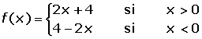
2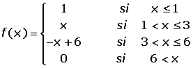
3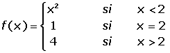
2Representa las funciones valor absoluto:
1f(x) = |x − 2|
2f(x) = |x² − 4x + 3|
3f(x) = |x| − x
3Representa las funciones de la parte entera de x:
1f(x) = x + 1 − E(x)
2f(x) = 2x − E(x)
4Representa las funciones racionales y determina su centro:
1f(x) = 6/x
2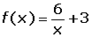
3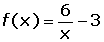
4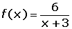
5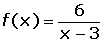
6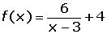
7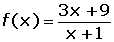
5Representa las funciones exponenciales:
1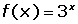
2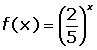
6Representa las funciones logarítmicas:
1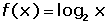
2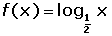
3f(x) = ln x
7Representa las funciones trigonométricas:
1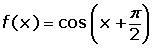
2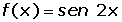
- 1
- 2
- 3
- 4
- 5
- 6
- 7
Ejercicio 1 resuelto
Representa las funciones definidas a trozos:
1
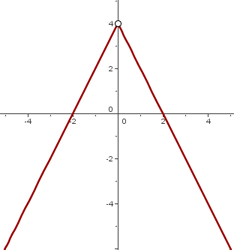
2
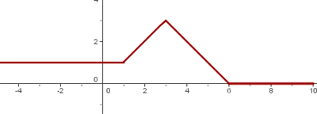
3
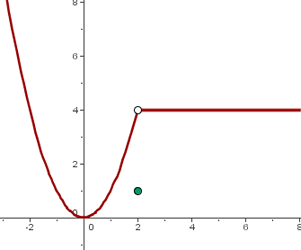
Ejercicio 2 resuelto
Representa las funciones valor absoluto:
1 f(x) = |x − 2|
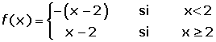
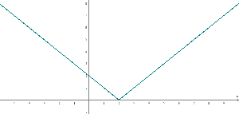
2 f(x) = |x² − 4x + 3|
x² −4x + 3 = 0 x = 1 x = 3
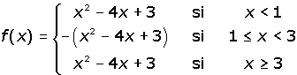
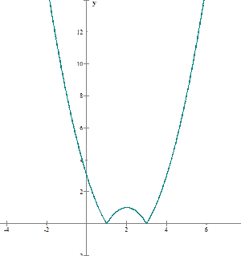
3f(x) = |x| − x
x = 0
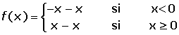
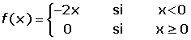
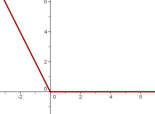
Ejercicio 3 resuelto
Representa las funciones de la parte entera de x:
1f(x) = x + 1 − E(x)
| x | 0 | 0.5 | 0.9 | 1 | 1.5 | 1.9 | 2 |
|---|---|---|---|---|---|---|---|
| f(x) = x + 1 − E(x) | 1 | 1.5 | 1.9 | 1 | 1.5 | 1.9 | 1 |
2 f(x) = 2x − E(x)
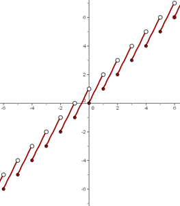
Ejercicio 4 resuelto
Representa las funciones racionales y determina su centro:
1f(x) = 6/x
| x | −6 | −3 | −2 | −1 | 1 | 2 | 3 | 6 |
|---|---|---|---|---|---|---|---|---|
| f(x) = 6/x | −1 | −2 | −3 | −6 | 6 | 3 | 2 | 1 |
2
f(x) = 6/x se desplaza hacia arriba 3 unidades.
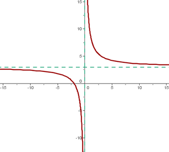
El centro de la hipérbola es: (0, 3)
3
f(x) = 6/x se desplaza hacia abajo 3 unidades.
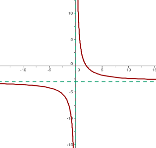
El centro de la hipérbola es: (0, −3)
4
f(x) = 6/x se desplaza hacia la izquierda 3 unidades.
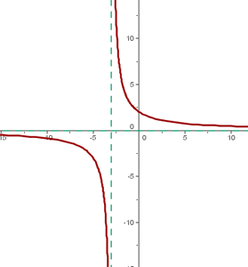
El centro de la hipérbola es: (−3, 0)
5
f(x) = 6/x se desplaza hacia la derecha 3 unidades.
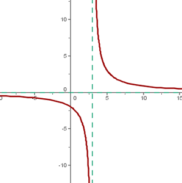
El centro de la hipérbola es: (3, 0)
6
f(x) = 6/x se desplaza hacia la derecha 3 unidades y 4 hacia arriba.
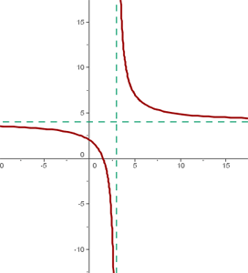
El centro de la hipérbola es: (3, 4)
7
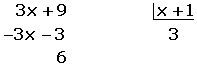
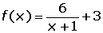
f(x) = 6/x se desplaza hacia la izquierda 1 unidad y 3 unidades hacia arriba.
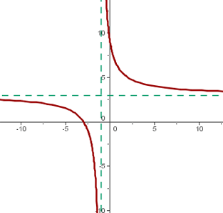
El centro de la hipérbola es: (−1, 3)
Ejercicio 5 resuelto
Representa las funciones exponenciales:
1
| x | −3 | −2 | −1 | 0 | 1 | 2 | 3 |
|---|---|---|---|---|---|---|---|
| f(x) = 3x | 1/27 | 1/9 | 1/3 | 1 | 3 | 9 | 27 |
2
| x | −3 | −2 | −1 | 0 | 1 | 2 | 3 |
|---|---|---|---|---|---|---|---|
| f(x) = (2/5)x | 15.625 | 6.25 | 2.5 | 1 | 0.4 | 0.16 | 0.064 |
2
| x | −3 | −2 | −1 | 0 | 1 | 2 | 3 |
|---|---|---|---|---|---|---|---|
| f(x) = (2/5)x | 15.625 | 6.25 | 2.5 | 1 | 0.4 | 0.16 | 0.064 |
Ejercicio 6 resuelto
Representa la funciones logarítmicas:
1
| x | 1/8 | 1/4 | 1/2 | 1 | 2 | 4 | 8 |
|---|---|---|---|---|---|---|---|
| f(x) | −3 | −2 | −1 | 0 | 1 | 2 | 3 |
2
| x | 1/8 | 1/4 | 1/2 | 1 | 2 | 4 | 8 |
|---|---|---|---|---|---|---|---|
| f(x) | 3 | 2 | 1 | 0 | −1 | −2 | −3 |
3f(x) = ln x

| x | 0.1 | 0.5 | 1 | 2 | 3 | 4 | 5 |
|---|---|---|---|---|---|---|---|
| f(x) | −2.3 | −0.7 | 0 | 0.7 | 1.1 | 1.4 | 1.6 |
Ejercicio 7 resuelto
Representa las funciones trigonométricas:
1
| x | 0 | π/4 | π/2 | 3π/4 | π | 5π/4 | 3π/2 | 7π/4 | 2π |
|---|---|---|---|---|---|---|---|---|---|
| f(x) | 0 | −0.7 | −1 | −0.7 | 0 | 0.7 | 1 | 0.7 | 0 |
2
| x | 0 | π/4 | π/2 | 3π/4 | π | 5π/4 | 3π/2 | 7π/4 | 2π |
|---|---|---|---|---|---|---|---|---|---|
| f(x) | 0 | 1 | 0 | −1 | 0 | 1 | 0 | −1 | 0 |
 Ejercicios
Ejercicios